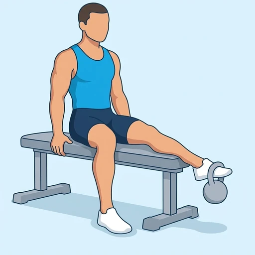
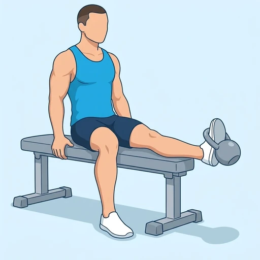
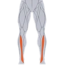

Kettlebell Tibialis Raise
A shin exercise performed seated on a bench with a kettlebell hanging from the front of one foot. Lifting the toes toward the shin against the weight strengthens the muscles at the front of the lower leg.
Lower legs · Kettlebell · Intermediate


Muscles worked by the Kettlebell Tibialis Raise
Primary

ShinsTibialis AnteriorAlso called: tibialis anterior, tibialis, shin, shins, shin muscle, anterior tibialis.
Equipment
Also called: kb, cast iron kettlebell, competition kettlebell, girya.
How to do the Kettlebell Tibialis Raise
- Sit at the end of a flat bench with one leg extended and the heel resting on the floor.
- Hang a kettlebell by its handle from the front of the foot, over the toes.
- Pull the toes up toward the shin as far as is comfortable while the heel stays on the floor.
- Hold briefly at the top.
- Lower the foot slowly until the toes point toward the floor.
- Complete the repetitions, then switch legs.
Form tips
- Keep the movement at the ankle; the knee and thigh stay still.
- Start with a light kettlebell and increase gradually; the shin muscles tire quickly.
- Lower slowly rather than letting the weight drop.
At a glance
| Body part | Lower legs |
|---|---|
| Category | Strength |
| Force type | Push |
| Mechanic | Isolation |
| Difficulty | Intermediate |
| Equipment | Kettlebell |
| Goals | Hypertrophy, Rehabilitation |
| Tags | Knee safe, Shoulder safe, No axial load, Lower back safe, Requires bench |
| MET | 5.0 (metabolic equivalent, for calorie estimates) |
| Unilateral | Yes |
| Bodyweight | No |
| Dataset id | kettlebell-tibialis-raise |
Kettlebell Tibialis Raise in German & Spanish
| German | Kettlebell-Tibialis-Heben |
|---|---|
| Spanish | Elevación de Tibial con Pesa Rusa |
Descriptions, instructions and tips ship in all three languages in the JSON.
Related exercises
Exercise data (JSON)
The record below is exactly what exercises.json ships for this exercise — names, descriptions, instructions and tips in English, German and Spanish.
{
"id": "kettlebell-tibialis-raise",
"name_en": "Kettlebell Tibialis Raise",
"name_de": "Kettlebell-Tibialis-Heben",
"name_es": "Elevación de Tibial con Pesa Rusa",
"description_en": "A shin exercise performed seated on a bench with a kettlebell hanging from the front of one foot. Lifting the toes toward the shin against the weight strengthens the muscles at the front of the lower leg.",
"description_de": "Eine Schienbeinübung im Sitzen auf einer Bank, bei der eine Kettlebell vorn an einem Fuß hängt. Das Anheben der Zehen Richtung Schienbein gegen das Gewicht kräftigt die Muskeln an der Vorderseite des Unterschenkels.",
"description_es": "Un ejercicio para las espinillas que se hace sentado en un banco con una pesa rusa colgada del frente de un pie. Levantar los dedos hacia la espinilla contra el peso fortalece los músculos de la parte delantera de la pierna.",
"category": "strength",
"force_type": "push",
"mechanic": "isolation",
"difficulty": "intermediate",
"equipment": "kettlebell",
"body_part": "lower_legs",
"primary_muscles": [
"tibialis_anterior"
],
"goals": [
"hypertrophy",
"rehabilitation"
],
"tags": [
"knee_safe",
"shoulder_safe",
"no_axial_load",
"lower_back_safe",
"requires_bench"
],
"variation_group": "calf-raise",
"is_unilateral": true,
"is_bodyweight": false,
"instructions_en": [
"Sit at the end of a flat bench with one leg extended and the heel resting on the floor.",
"Hang a kettlebell by its handle from the front of the foot, over the toes.",
"Pull the toes up toward the shin as far as is comfortable while the heel stays on the floor.",
"Hold briefly at the top.",
"Lower the foot slowly until the toes point toward the floor.",
"Complete the repetitions, then switch legs."
],
"instructions_de": [
"Setz dich ans Ende einer flachen Bank, ein Bein gestreckt, die Ferse auf dem Boden.",
"Häng eine Kettlebell am Griff vorn über den Zehen an den Fuß.",
"Zieh die Zehen so weit Richtung Schienbein nach oben, wie es angenehm ist, während die Ferse am Boden bleibt.",
"Halte oben kurz.",
"Senke den Fuß langsam, bis die Zehen zum Boden zeigen.",
"Führe alle Wiederholungen aus und wechsle dann das Bein."
],
"instructions_es": [
"Siéntate en el extremo de un banco plano con una pierna estirada y el talón apoyado en el suelo.",
"Cuelga una pesa rusa por el asa del frente del pie, sobre los dedos.",
"Sube los dedos hacia la espinilla todo lo que te resulte cómodo mientras el talón permanece en el suelo.",
"Mantén brevemente la posición superior.",
"Baja el pie despacio hasta que los dedos apunten al suelo.",
"Completa las repeticiones y luego cambia de pierna."
],
"tips_en": [
"Keep the movement at the ankle; the knee and thigh stay still.",
"Start with a light kettlebell and increase gradually; the shin muscles tire quickly.",
"Lower slowly rather than letting the weight drop."
],
"tips_de": [
"Bewege dich nur im Sprunggelenk; Knie und Oberschenkel bleiben ruhig.",
"Beginne mit einer leichten Kettlebell und steigere dich langsam; die Schienbeinmuskeln ermüden schnell.",
"Senke langsam ab, statt das Gewicht fallen zu lassen."
],
"tips_es": [
"Haz el movimiento solo desde el tobillo; la rodilla y el muslo permanecen quietos.",
"Empieza con una pesa rusa ligera y aumenta poco a poco; los músculos de la espinilla se fatigan rápido.",
"Baja despacio en lugar de dejar caer el peso."
],
"met": 5.0,
"images": {
"flat": {
"start": "images/flat/kettlebell-tibialis-raise-start.webp",
"peak": "images/flat/kettlebell-tibialis-raise-peak.webp"
}
}
}Fetch just this exercise
const { exercises } = await fetch(
"https://exercise-dataset.com/exercises.json"
).then(r => r.json());
const ex = exercises.find(e => e.id === "kettlebell-tibialis-raise");Free for personal and commercial in-app use with attribution (“Exercise data by RepDB”) — see the license and ready-made attribution snippets. Redistributing the data as a dataset or API is not permitted.